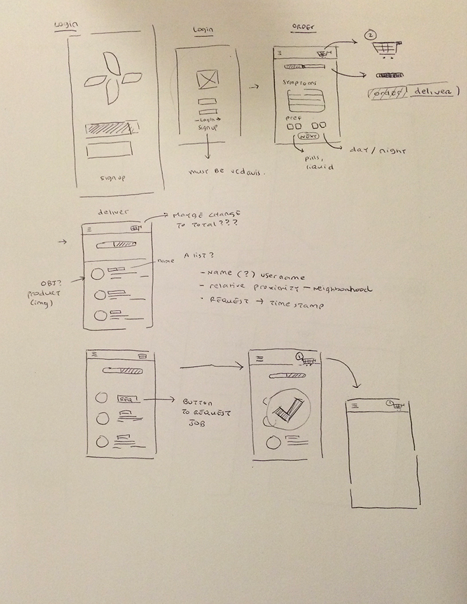

I collaborated with Gary Tam, Beatrice Lee, and Michael Villas during HackDavis 2016 Hackathon to create a product to help people when they're sick. With only 24 hours and a lot of caffeine, we developed an app and website to help college students decide what the best over-the-counter medicine to buy when they're sick and to also incorporate a community aspect to it by allowing users to help deliver medicine.
For many college students, it's their first time living on their own and for the first time, they're responsible for a lot of major decisions regarding their health. Remedy Buddy is a way to help make the best decision when buying medicine. Medicine is recommended based on symptoms. Reviews are included to help make the best decision based on other people's experiences. We incorporated a community aspect to this by allowing people in the community help deliver medicine to those in need. Oftentimes when people are sick, they don't even feel well enough to leave the house.
As a team of designers in a room with over 200 programmers, we were at a huge disadvantage and relied heavily on our concept, strong visuals, and good user experience. I took the lead with front-end development and with the help of my teammate Gary we were able to develop an interactive prototype of the website. Halfway into the Hackathon, we realized the importance and benefits of a mobile app and created mockups for it.
The site's main purpose is to help users decide what is the best medicine to buy.
View an interactive prototype of the website here.
The mobile app also incorporates the same features as the website by helping users decide what is the best medicine to buy, but it also encourages community involvement by allowing users to deliver medicine. Since most medicine can be bought at the same store, we allow users to be able to make multiple medicine deliveries at once.

User feedback was an important part to our app since money is involved. We make sure users are constantly up to date with the process of their delivery and ensure constant communication between the deliverer and receiver.